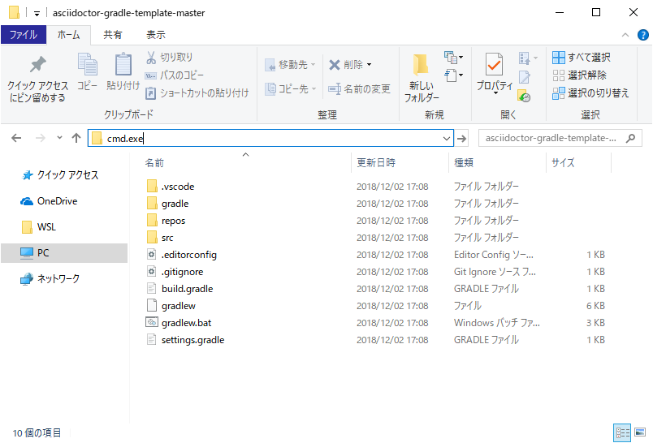

1. はじめに
本文書は Asciidoc とその Ruby による実装である Asciidoctor を用いて PDF 文書を作成する手順を示します。実行環境は Windows、Linux、macOS の各 OS に対応しています。
Asciidoc は表現力の高い文書をテキストファイルベースで執筆できるテキストプロセッサーです。他の軽量テキストプロセッサーが持たない文書間のインクルードやソースコードの挿入などの機能も有し、かつ簡潔です。特に技術文書の執筆には大きな力を発揮することでしょう。
|
|
一般的にこのようなテキストプロセッサーを用いた執筆環境を構築するためには多くの準備が必要となりますが、本文書の手順は極力初期導入するプロダクトを少なく、簡単に快適な執筆環境を整えられるよう考えられています。
具体的には PDF 変換に、実行を JVM 環境だけに依存する Ascidocrotj と Gradle を活用し、執筆環境については Visual Studio Code を用いることでリアルタイムに文書をプレビューしながら、最後にコマンド一つで PDF 化できるように準備してあります。
本文書がみなさんの執筆活動のお手伝いになれば幸いです。
1.1. 謝辞
本文書の手順の実装であるビルドスクリプトやテーマでは次のプロダクトと技術資料が使われています。
| プロダクト名の隣にライセンスを併記しました。商用利用等で制限のあるプロダクトはありませんが、それぞれライセンスを確認してください。 |
- Font
-
-
源真ゴシック - SIL Open Font License 1.1 - http://jikasei.me/font/genshin/
-
M+ Fonts - M+ FONT LICENSE - https://mplus-fonts.osdn.jp/about.html
-
Ricty Diminished - SIL Open Font License 1.1 - https://github.com/edihbrandon/RictyDiminished
-
- Asciidoc
-
-
Asciidoctor - MIT License - https://asciidoctor.org/
-
Asciidoctorj - MIT License - https://github.com/asciidoctor/asciidoctorj
-
Asciidoctor.js - MIT License - https://asciidoctor.org/docs/asciidoctor.js/
-
Asciidoctor PDF - MIT License - https://asciidoctor.org/docs/asciidoctor-pdf/
-
asciidoctor-pdf-cjk - MIT License - https://github.com/chloerei/asciidoctor-pdf-cjk
-
- Build Tool
-
-
Gradle - Apache License 2.0 - https://gradle.org/
-
- Text Editor
-
-
Visual Studio Code - Microsoft - https://code.visualstudio.com/
-
asciidoctor-vscode - MIT License - https://github.com/asciidoctor/asciidoctor-vscode
-
- Guide
-
-
asciidoctor-pdfでかっこいいPDFを作る - https://qiita.com/kuboaki/items/67774c5ebd41467b83e2
-
素晴らしい成果を公開されているみなさまに感謝します。
2. PDF 変換用ビルドスクリプトを使う準備
本手順で用いる PDF 変換用ビルドスクリプトはビルドツールである Gradle を活用しており、実行するためには Java 実行環境が必要です。
| Java 実行環境は、本手順で唯一 OS 環境に手動で導入する必要があるプロダクトです。それ以外のプロダクトは Gradle によりプロジェクトとして独立した形で自動的に導入されます。 |
お使いのコンピューターのコマンドライン環境（macOS/Linux ではターミナル、Windows では cmd.exe か powershell.exe）で java -version コマンドを入力し、Java 8 以上のバージョンが表示されるようであれば既に準備は整っています。
$ java -version
openjdk version "1.8.0_192"
OpenJDK Runtime Environment (Zulu 8.33.0.1-macosx) (build 1.8.0_192-b01)
OpenJDK 64-Bit Server VM (Zulu 8.33.0.1-macosx) (build 25.192-b01, mixed mode)C:¥> java -version
openjdk version "1.8.0_192"
OpenJDK Runtime Environment (AdoptOpenJDK)(build 1.8.0_192-b12)
OpenJDK 64-Bit Server VM (AdoptOpenJDK)(build 25.192-b12, mixed mode)
現在 Java 9 以降の環境で Asciidoctor の実行環境となる JRuby が（ビルドの範囲では動作に問題ないように見えるものの）実行時にワーニングを出力するため、本手順では Java 8 を使って解説しています。この問題は将来解消されるでしょう。
|
2.1. Java 実行環境の導入（macOS / Linux の場合）
もし macOS / Linux 環境に Java 実行環境がなければ SDKMAN を利用することで、ターミナルから簡単に導入することができます。
SDKMAN! is a tool for managing parallel versions of multiple Software Development Kits on most Unix based systems.
$ curl -s "https://get.sdkman.io" | bash (1)
$ source "$HOME/.sdkman/bin/sdkman-init.sh" (2)
$ sdk list java (3)
=========================================
Available Java Versions
=========================================
12.ea.20-open
11.0.1-zulu
11.0.1-open
10.0.2-zulu
10.0.2-open
9.0.7-zulu
9.0.4-open
8.0.192-zulu (4)
8.0.191-oracle
7.0.181-zulu
1.0.0-rc9-graal
1.0.0-rc8-graal
1.0.0-rc7-graal
$ sdk install java 8.0.192-zulu (4)| 1 | SDKMAN を導入します。 |
| 2 | SDKMAN を環境に設定します。 |
| 3 | 導入できる Java のバージョンを一覧します。 |
| 4 | 8.0 系の最新バージョンを指定して Java を導入します。 |
また、Gradle は JAVA_HOME 環境変数に実行環境の Java のパスが設定されていることを期待していますので、.bash_profile で次のように JAVA_HOME を設定します。
$ vi ~/.bash_profile (1)
export JAVA_HOME=~/.sdkman/candidates/java/current (2)
$ source ~/.bash_profile (3)| 1 | vi エディタで .bash_profile を開きます。 |
| 2 | 本ラインをファイルの最下部に追加し vi を保存終了します。 |
| 3 | 設定を適用します。 |
これで準備完了です。
2.2. Java 実行環境の導入（Windows の場合）
もし Windows 環境に Java 実行環境がなければ AdoptOpenJDK プロジェクトが提供する OpenJDK のバイナリを導入すると良いでしょう。
Java™ is the world’s leading programming language and platform. The code for Java is open source and available at OpenJDK™. AdoptOpenJDK provides prebuilt OpenJDK binaries from a fully open source set of build scripts and infrastructure.
https://adoptopenjdk.net サイトにブラウザでアクセスし、OpenJDK 8 (LTS) - HotSpot を選択した後、zip ファイルをダウンロードしてください。

zip ファイルを任意の場所に展開します。ここでは C:\develop\runtime\openjdk8 に展開したとします。

Gradle は JAVA_HOME 環境変数に実行環境の Java のパスが設定されていることを期待していますので、 からユーザー環境変数に JAVA_HOME を追加し、先ほど .zip を展開したパス（C:\develop\runtime\openjdk8 ）を設定します。

Gradle は JAVA_HOME 環境変数を元に Java の実行環境を探すため、java コマンドを使うための PATH 環境変数は設定しなくてもかまいません。
|
これで準備完了です。
3. Asciidoc から PDF 文書を作成する
3.1. サンプル文書の PDF 変換を試す
環境の準備ができましたので Asciidoc 文書を PDF に変換してみます。
変換に使うビルドスクリプトは github のリポジトリに公開されており、リポジトリには PDF 変換に使うファイル一式と、文書サンプルとして "この文書" の Asciidoc ファイルが置かれています。まずはサンプル文書が正しく PDF に変換できるかを試してみましょう。
macOS / Linux の場合は次のようにします。
$ curl -L -O https://github.com/h1romas4/asciidoctor-gradle-template/archive/master.zip (1)
$ unzip master.zip (2)
$ cd asciidoctor-gradle-template-master (3)
$ ./gradlew asciidoc (4)
> Task :asciidoctor
BUILD SUCCESSFUL in 19s (5)
2 actionable tasks: 1 executed, 1 up-to-date| 1 | リポジトリのファイルをダウンロードします。 |
| 2 | ダウンロードした .zip ファイルを展開します。 |
| 3 | カレントディレクトリを展開したフォルダの中に移します。 |
| 4 | Gradle のビルドを実行します。初回実行時はビルドに必要なファイルをダウンロードするため少し時間がかかります。次回は数秒で完了します。 |
| 5 | BUILD SUCCESSFUL が出力されればビルド成功です。 |
Windows をお使いの場合は同等の操作をブラウザとエクスプローラーを使って行います。
-
ブラウザを使って
https://github.com/h1romas4/asciidoctor-gradle-template/archive/master.zipにアクセスしリポジトリのファイルを取得します。 -
ダウンロードした .zip ファイルを右クリックし展開します。
-
展開したフォルダ内をエクスプローラーで表示した上で、アドレスバーに
cmd.exeと入力し、このフォルダをカレントディレクトリとしてコマンドプロンプトを起動します。 -
.\gradlew.bat asciidocと入力し Gradle ビルドを実行します。 -
BUILD SUCCESSFULが出力されればビルド成功です。
Asciidoc から変換された PDF は次の場所に格納されます。
build/asciidoc/pdf/index.pdfindex.pdf が作成され正しい文書が表示できればビルドは成功です。コンピューターに Asciidoc 文書を PDF に変換する環境が整いました。
サンプル文書は Asciidoc 文書形式のひな形にもなっています。このファイルを元に次は自身の Asciidoc 文書を作成していきます。
4. Asciidoc テンプレート集
4.1. 脚注
脚注は次のように書きます。
|
|
|
|
その他に、IMPORTANT NOTE CAUTION があります。
1行でこのようにもかけます。
IMPORTANT: 重要事項を記述します。4.2. 画像挿入
4.3. キーボードショートカット表記
ショートカット |
目的 |
F11 |
全画面表示 |
Ctrl+T |
新規タブを開く |
Ctrl+Shift+N |
シークレットウインドウを開く |
Ctrl++ |
ズーム |
ファイルを保存するには を選択します。拡大率をデフォルトに戻すには を選択します。
完了したら OK ボタンを押してください。ナビゲーターでファイルを選択し、 開く をクリックしてください。
4.4. 属性値の文書への挿入
値: src/
4.5. ソースコード（直接記述）
class Hello {
public static void main(String[] args) {
// comment
System.out.println("Hello, World"); (1)
}
}| 1 | 注釈をいれることができます。 |
4.6. ソースコード（外部ファイルのinclude）
| ファイルから行数とインデントを指定できます。 |
alert("hoge"); (1)
}| 1 | include 中でも注釈を指定できます。 |
4.7. サイドバー
4.8. 引用
引用です。引用です。引用です。
引用です。引用です。引用です。
4.9. 表組み
| Col 1 | Col 2 | Col 3 |
|---|---|---|
1 |
Item 1 |
a |
2 |
Item 2 |
b |
3 |
Item 3 |
c |
1 |
2 |
3 |
4 |
a |
b |
c |
d |
A |
B |
C |
D |
4.10. 改ページ
<<<4.11. 水平線
---4.12. リスト
-
レベル１
-
レベル２
-
レベル３
-
レベル４
-
レベル５
-
-
-
-
-
レベル１
4.13. リスト（順番あり）
-
手順１
-
手順２
-
手順２a
-
手順２b
-
-
手順３
4.14. 定義リスト
- 第一項
-
第一項の定義
- 第二項
-
第二項の定義
4.15. リストとラベルの組み合わせ
- オペレーティング システム
-
- Linux
-
-
Fedora
-
デスクトップ
-
-
Ubuntu
-
デスクトップ
-
サーバ
-
-
- BSD
-
-
FreeBSD
-
NetBSD
-